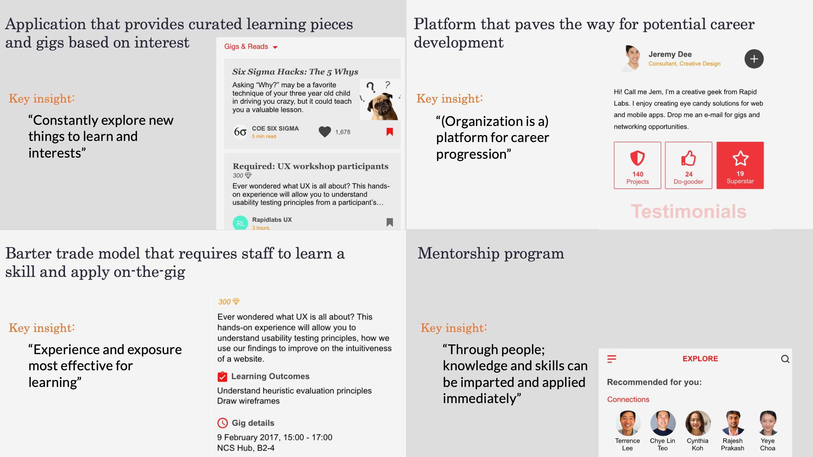

The Singtel Group is looking to meet the needs for the working population of tomorrow. An employee app is commissioned to enable staff to connect and stay engaged with the organization on the go, and at the same time, enable work productivity.
We focused on employees' personal learning and development and wanted to design a feature that would make personal growth more accessible and convenient within the organization.
To understand the aspirational needs of the employees, we conducted 10 user interviews with employees who have been in the organization between 1 to 3 years.
The goal of the interview was to understand what personal development means to them, what are their habits towards learning (if applicable) and their perceptions of the organization’s role and resources towards this topic. A topic cloud was used to structure the interview instead of a interview questionnaire or guide to allow more fluidity and flexibility in the interview process.
A key download of the resesarch findings were done to a larger team, and a ideation workshop was conducted to brainstorm solutions
The final idea selected was a gig marketplace called Padawan that would allow employees to gain knowledge and skills that were relevant to the industry and enable internal mobility, which they strongly valued.
The app was designed with the corporate red color as the primary colour for brand identity, while purple and orange were selected as secondary colour and accent respectively to give an overall vibrant and fresh feel to the app.